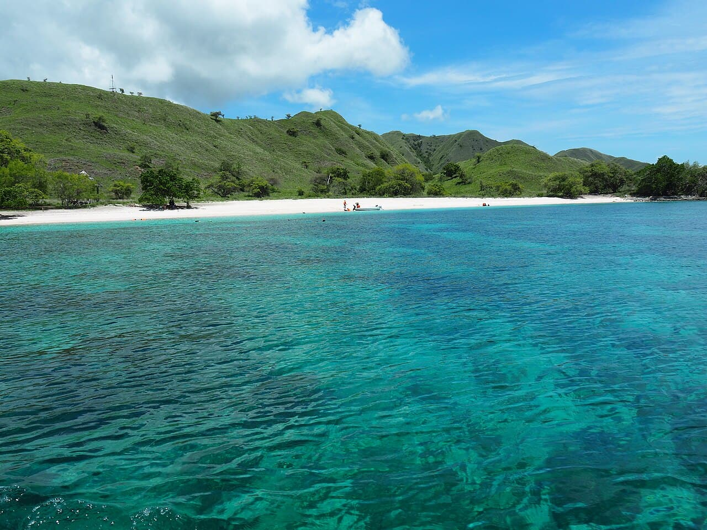

Komodo
Indonésie · plongée, snorkeling

Des courants puissants entre les îles y concentrent une vie marine spectaculaire : raies manta, bancs serrés et tombants couverts de coraux mous.
- Lieu
- Indonésie
- Niveau
- Expert
- Activités
- plongée, snorkeling
- Type d'eau
- Mer / océan
- Coordonnées
- -8.55, 119.48 (position approximative du secteur)
Dangers à connaître
- Courants parmi les plus forts d'Indonésie, y compris descendants.
- Navigation dense entre les sites.
- Plongée en dérive réservée aux plongeurs expérimentés.
Le conseil d'Ocean Buddy
Ne plonge qu'avec un guide local : ici, la lecture des courants est un métier.
Ouvrir dans Ocean Buddy Télécharger sur l'App Store
Source : Description historique Ocean Buddy · vérification externe en attente.